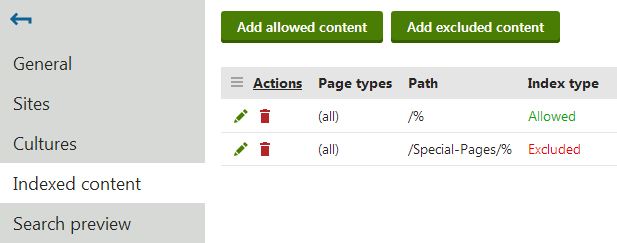
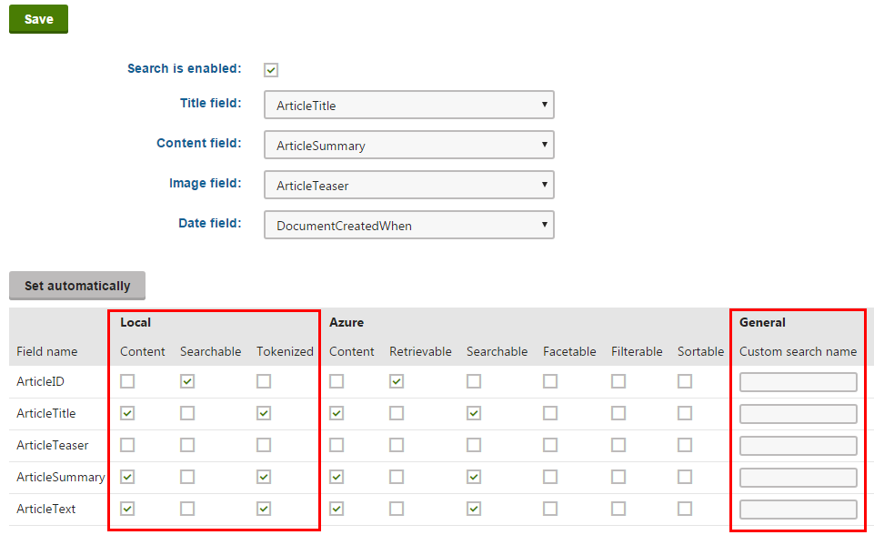

Defining local page indexes
You can use two types of locally stored search indexes for the pages of websites (i.e. pages in the content tree):
|
Pages |
Index the following page data:
Note: Pages indexes do NOT include the text of other pages or objects displayed through web parts (such as the content of News page displayed through a Repeater web part). |
|
Pages crawler |
Directly parse the HTML output generated by pages, which allows the search to find any text located on pages. Crawler indexes provide more accurate searches of page content than standard Pages indexes. However, building and updating crawler indexes may require more time and resources, particularly in the case of large indexes and complex pages. See also: Configuring page crawler indexes |
Note: Page indexes only cover pages that are published on the live site.
To define which pages an index covers, specify allowed or excluded content:
Open the Smart search application.
Select the Local indexes tab.
Edit (
 ) the index.
) the index.Select the Indexed content tab.
Click Add allowed content or Add excluded content.
Open the Sites tab and assign the websites where you wish to use the index.
Switch to the Cultures tab and select which language versions of the website's pages are indexed.
At least one culture must be assigned in order for the index to be functional.

Specifying allowed or excluded content for a page index
Adding allowed content
Allowed content defines which of the website's pages are included in the index. Specify pages using a combination of the following options:
Path – path expression identifying the pages that should be indexed.
Page types – allows you to limit which page types are included in the index.
The following properties define types of additional content that you can include in Page search indexes. The settings are not available for Pages crawler indexes:
Include ad-hoc forums – includes the content of ad-hoc forums placed on the specified pages (if there are any).
Include blog comments – includes blog comments posted for blog post pages.
Include message boards – includes message boards placed on the specified pages.
Include attachment content – if selected, the index includes the text content of files attached to the specified pages. See Searching attachment files for more information.
Include categories – if selected, the index stores the display names of Categories assigned to the specified pages. This allows users to find pages that belong to categories whose name matches the search expression.
Examples
|
Allowed content settings |
Result |
|
Indexes all pages on the site. |
|
Only indexes the /Partners page, without the child pages placed under it. |
|
Indexes all pages of the CMS.News page type on the entire site. |
|
Indexes all pages of the CMS.Smartphone and CMS.Laptop page types found under the /Products section. |
Adding excluded content
Excluded content allows you to remove pages or entire website sections from the allowed content. For example, if you allow /% and exclude /Special‑pages/% at the same time, the index will include all pages on the site except for the ones found under the /Special-pages node.
You can specify the following options:
Path – path expression identifying the pages that should be excluded.
Page types – allows you to limit which page types are excluded from the index.
Examples
|
Excluded content settings |
Result |
|
Excludes the /Partners page from the index. Child pages are not excluded. |
|
Excludes all pages of the CMS.News page type from the index. |
|
Excludes all pages of the CMS.Smartphone and CMS.Laptop page types found under the /Products section from the index. |
Excluding individual pages from all indexes
You can also exclude specific pages from all smart search indexing:
Open the Pages application.
Select the given page in the content tree.
In Edit mode, open the Properties -> Navigation tab.
Enable the Exclude from search property.
Click Save.
Configuring search settings for page fields
Pages are often complex data structures with many different fields. Not all fields may be relevant to the search that you are implementing. Page types allow you to adjust how the system indexes specific fields. We recommend indexing only necessary fields to keep your indexes as small (and fast) as possible.
Pages crawler search indexes directly index the HTML output of pages. As a result, crawler indexes are not affected by the field settings of page types.
To edit the field search settings for page types:
Open the Page types application.
Edit (
) a page type.Open the Search fields tab.
The options in the top part of the tab allow you to configure how the system displays pages of the given type in search results. Note that the final appearance of the search results always depends on the used search result transformation.
Title field – select the page field whose value is used for the title of search results.
Content field – the field whose value is used for the content extract of search results.
Image field – the field that contains the image displayed in search results.
Date field – the field whose value is used for the date and time displayed in search results.
The grid in the bottom section of the tab determines how the smart search indexes the page type's fields (as defined on the Fields tab).
For locally stored search indexes, only the options under the Local and General sections of the grid apply (to learn about Azure Search page indexes, see Creating Azure Search indexes). You can set the following search options for individual fields:
|
Content |
If selected, the content of the field is indexed and searchable in the standard way. Within search indexes, the values of all fields with the Content option enabled are combined into a system field named _content (this field is used to find or filter matching search items, but is NOT suitable for reading and displaying human-readable information such as search result extracts). For the purposes of standard search, Content fields are automatically tokenized by the analyzer of the used search index. |
|
Searchable |
If selected, the field is stored separately within indexes and its content can be searched using expressions in format: <field code name>:<searched phrase> See Smart search syntax for more information about field searches. Fields must be set as Searchable to be usable in Search filters and general search result filtering or ordering conditions (such as the Search condition and Search sort properties of Smart search result web parts). |
|
Tokenized |
Relevant for Searchable fields. Indicates if the content of the field is processed by the analyzer when indexing. This allows the search to find results that match individual tokens (subsets) of the field's value. If disabled, the search only returns items if the full value of the field exactly matches the search expression. If a field has both the Content and Searchable options enabled, the Tokenized option only affects the content used for field searches (content is always automatically tokenized for the purposes of standard search). |
|
Custom search name |
Relevant for Searchable fields. The specified value is used as a substitute for the field code name in <field code name>:<searched phrase> search expressions. Note: If you enter a Custom search name value, the original field name cannot be used. |

Configuring a page type's search field settings for locally stored indexes
After you Save changes of the field settings, you need to Rebuild all indexes that cover pages of the given type.
When running searches using page indexes, the system returns results according to the field search settings of individual page types. The page type search settings are shared by all page indexes in the system.
SKU (product) and general page fields
To configure the field search settings for E-commerce SKUs (products):
Warning: It is highly recommended to modify only the settings of custom SKU fields. Changing the settings of the default fields may prevent the system from searching through products correctly.
Open the Modules application.
Edit (
) the E-commerce module.Open the Classes tab.
Edit the SKU class.
Select the Search tab.
Click Customize.
You can configure the search settings for fields just like for page types. The SKU fields are joined together with general page fields, such as fields that store the content of editable regions on pages (DocumentContent) or the content of text widgets (DocumentWebParts).
Important: The search settings of general fields affect all pages, even those that are not products.
Configuring page crawler indexes
Page crawler search indexes read the content of pages while logged in under a user account. You can configure the following properties for every page crawler index (on the General tab of the index editing interface):
|
Index property |
Description |
|
User |
Sets the user account that the crawler uses to index pages. Reading pages under a user allows the crawler to:
If empty, the index uses the user account specified in Settings -> System -> Default user ID (or the default administrator user account if the setting is empty). On websites that use Windows authentication, you need to type the user name (including the Active Directory domain in format domain\username) and password. To guarantee that the crawler indexes under the specified Active Directory user, the covered pages cannot be accessible by public users (i.e. Windows authentication must be required). Note: The specified user account must be enabled (content will not be indexed if the user is disabled). |
|
Domain |
Sets the domain that the crawler uses when indexing sites. Enter the domain name without the protocol, for example: www.domain.com If empty, the crawler automatically uses the main domain of the site where the indexed pages belong. For example, you can set a custom domain for web farm servers that do not have access to the main domain. |
By default, page crawlers also index pages that use redirection from the site's main domain name to a domain alias. To only allow indexing for pages that use the website's main domain, set the CMSCrawlerAllowSiteAliasRedirect key to false in your application's web.config file:
<add key="CMSCrawlerAllowSiteAliasRedirect" value="false" />The key applies to all page crawler indexes in the system.
Customizing how crawlers process page content (API)
By default, the system converts the HTML output of pages to plain text before saving it to page crawler indexes:
Strips all HTML tags
Removes the Head tag, Style tags and all JavaScript
Converts all whitespace formatting to simple spaces
If you wish to index the content of any tags or exclude parts of the page output, you can customize how the crawlers process the HTML. You need to implement your custom functionality in a handler of the OnHtmlToPlainText event of the CMS.Search.SearchCrawler class. This event occurs whenever a page search crawler processes the HTML output of a page.
To assign a method as the handler for the OnHTMLToPlainText event, create a custom module class and override its OnInit method. Either add the class into a custom project within the Kentico solution (recommended) or directly into the Kentico web project (into a custom folder under the CMSApp project for web application installations, into the App_Code folder for web site installations). For example, you can define the content of the class as shown below:
using System.Web;using CMS;using CMS.DataEngine;using CMS.Search;using CMS.Helpers;// Registers the custom module into the system[assembly: RegisterModule(typeof(CustomSearchCrawlerModule))]public class CustomSearchCrawlerModule : Module{ // Module class constructor, the system registers the module under the name "CustomSearchCrawler" public CustomSearchCrawlerModule() : base("CustomSearchCrawler") { } // Contains initialization code that is executed when the application starts protected override void OnInit() { base.OnInit(); // Assigns a handler for the OnHtmlToPlainText event SearchCrawler.OnHtmlToPlainText += new SearchCrawler.HtmlToPlainTextHandler(SearchHelper_OnHtmlToPlainText); } // Add your custom HTML processing actions and return the result as a string static string SearchHelper_OnHtmlToPlainText(string plainText, string originalHtml) { string outputResult = originalHtml; // Removes new line entities outputResult = outputResult.Replace("\n", " "); // Removes tab spaces outputResult = outputResult.Replace("\t", " "); // Removes JavaScript outputResult = HTMLHelper.RegexHtmlToTextScript.Replace(outputResult, " "); // Removes tags outputResult = HTMLHelper.RegexHtmlToTextTags.Replace(outputResult, " "); // Decodes HTML entities outputResult = HttpUtility.HtmlDecode(outputResult); return outputResult; }}The OnHTMLToPlainText event provides the following string parameters to the handler:
plainText – the page output already stripped of all tags and converted to plain text
originalHTML – the raw page HTML code without any modifications